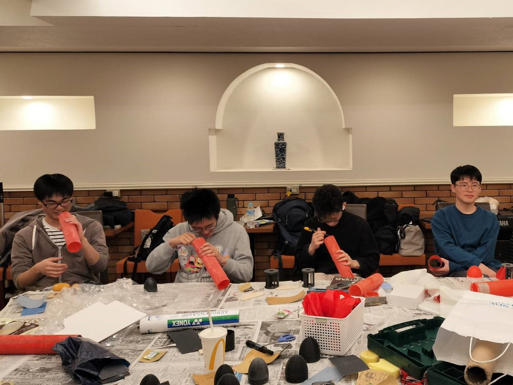
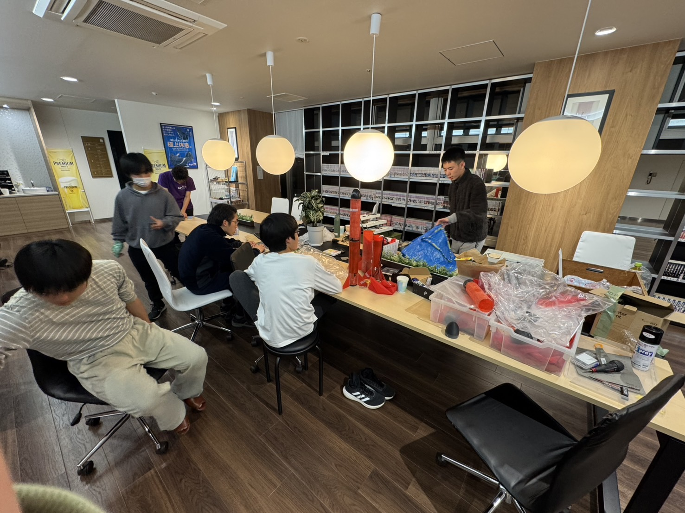
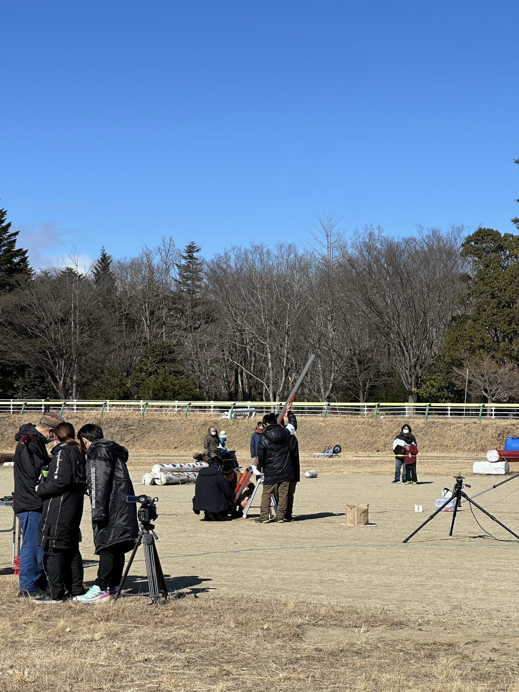
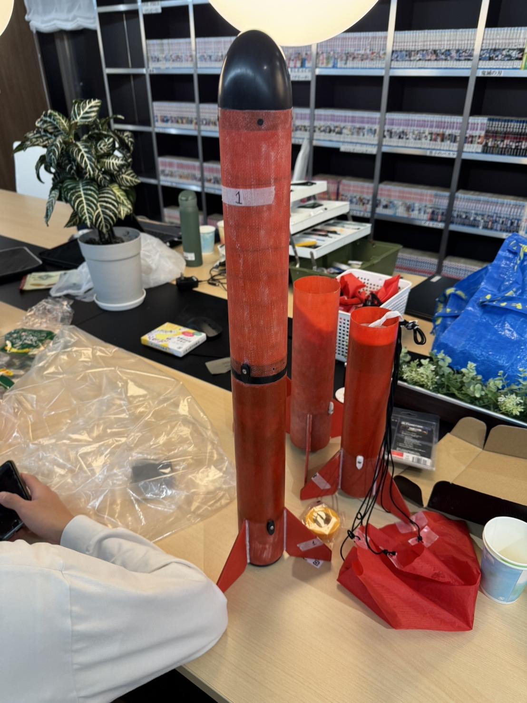
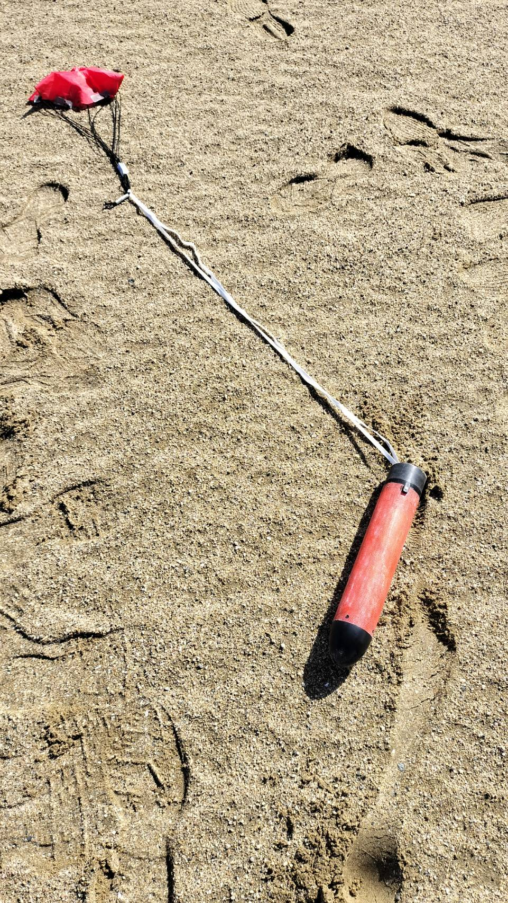

モデルロケット甲子園
優勝！
最終更新：2025/2/21 投稿：2025/2/18
モデルロケット甲子園とは？
モデルロケット甲子園とは中高生のチームが対象の、モデルロケットを飛ばし、目標の高度、パラシュートが落下してくるまでの滞空時間からどれだけ差を縮めることができたかを競う大会です。今回、予選からは約50チームが参加し、地方大会やオンライン予選会を経て、11チーム(大会当日は棄権などもあり9チーム)が福島で開催される決勝へ進みました。
結果
1回目打上目標高度 :544ft(約166m)
目標滞空時間:30.1～32.3秒
結果高度 :556ft(約169m)
結果滞空時間:34.05秒
合計ポイント:26.94pt
2回目打上
目標高度 :528ft(約161m)
目標滞空時間:30.1～32.3秒
結果高度 :602ft(約183m)
結果滞空時間:26.67秒
合計ポイント:125.99pt
小さいポイントのほうを採用するので、26.94ptを1回目打ち上げでとり、優勝しました。
大会までの流れ
準備期間(～2/6)
もともとの大会のレギュレーションでは、全チーム一律で目標高度が790ft(約241m)、目標滞空時間が41～44秒というものでした。しかし、エンジンの輸入がうまくいかず、大会に使用予定のエンジンが到着しないことが見込まれたため、本来より推力の弱いエンジンでの大会となり、直前のレギュレーション変更により対応が困難なチームがある可能性も考慮され、目標高度を自己申告し、その比率に対応した滞空時間を目標とすることになりました。
1月まで 機体設計、2/1の打上会に向けた機体製作
1/11に日本大学様のグラウンドでの打上会に参加させていただき、私たちの最初の機体を飛ばしました。シミュレーションの2/3倍ほどの高度しか飛ばず、それに対してその高度に対応した滞空時間と比較すると、目標より大幅にオーバーしてしまいました。これをもとに、従来より軽く、さらに機体の直径が細くて空気抵抗の小さい機体作成を行いました。
《写真》活動の様子
《写真》活動の様子
2/1 日本大学様のグラウンドでの打上会
大会１週間前でまさかのロケットが墜落してしまいました。なぜ起こったかというと、機体からパラシュートが出るために機体が上部と下部に分解される必要があるのですが、この連結部分がきつすぎて上手く離れることができなかった、また、回収装置が機体内部で絡まって出てこなかった、の２つが挙げられました。これは私たちにとって想定外でしたが、大会までにその部分をより調節した機体製作を行いました。
大会まで 機体の再製作、パラシュートの落下実験、シミュレーション
目標滞空時間に適したパラシュートを作るため、1,2cm単位で大きさの異なる10種類ほどのパラシュートを用意し、学校の5階からパラシュートの落下実験を行いました。各パラシュートで10回のデータをとり、平均から適したパラシュートを選定しました。
大会直前、機体が完成し、機体に関する情報が全て揃ったので、シミュレーションを開始しました。大会当日の風を複数のwebツールを用いて収集し、目標高度に丁度達するようにするには、どれほどのおもりを機体に積めばよいかを計算しました。(おもりで高度の調節が効くよう、少し軽めに機体を製作しました)
大会1日目
朝7:30東京駅丸の内南口、メンバー12人、一緒に行ってくださる大人の方が2人、集結しました。原ノ町駅までの特急ひたちの中では、パラシュートの落下実験を解析したり、シミュレーションを続けたり、朝早く起きて疲れたものは寝たり、各々がやるべきことをやっていました。
昼食を食べて大会会場到着、しかしそこでテストフライト(目標高度と今の機体の高度のズレを確認、修正するため必要)が悪天候によるエンジン未配送によってできないという報告を受けました。そのため、会場の様子だけ確認し、私たちはホテルへ帰りました。
1日目夜
高度を目標と揃える上で、実際のデータはそこからの比で考えることができてとても有効なのですが、テストフライト中止によりそのデータが得られなくなったので、その夜は怒涛のシミュレーションづくしでした。あくまでシミュレーションは机上論なので絶対的な信頼はないのですが、さまざまな情報を収集してできるだけ本番に近いシチュエーションでのシミュレーションを行いました。また、機体の最終調整も行いました。
《写真》調整中の様子
《写真》調整中の様子
大会2日目-1回目打上-
現地入りしてまず発射台の組み立てを行いました。この時、地面が砂であったためにねじ穴に砂が詰まってしまい、ねじが中途半端なところで引っかかってしまうなどのハプニングなどはありましたが、無事に打ち上げ場に発射台をセッティングし、機体の装填の方に入りました。「これは割れない」という信頼のできる卵を選んで機体に積み、自分たちの打上の順番を待ちました。
1回目打上
私たちは風速が7m/sと予想しており、実際にそれに近い風が吹いていました。私たちの機体は発射台を飛び出してすぐ風によって少し傾き、斜めに飛んでいきました。この軌道は想定通りでしたが、上空の風が予想よりも強かったのか(真偽はわかりませんが)思った以上に斜めに飛んでしまい、場外へ飛んで行ってしまわないか(失格)少し焦りました。ただ、パラシュートが無事に開傘し、打上場内に着陸し、最初のラインは突破しました。
機体を回収して、中の卵が割れていないことを確認し、結果が残ることが確定してまず安堵しました。そして運命の高度計のデータは目標から3mズレでかなり精度の高い打上をすることに成功しました。パラシュートも想定通りに落下してきて目標から2秒だけ遅く落ちてきました。1回目打上を首位で突破することができました。
《動画》１日目ロケットの打ち上げ
2日目夜
2回目打上ではもとの目標高度の3%減が目標高度となったので、1回目打上のデータをもとに、さらに積むおもりの量をシミュレーションしました。3日目の風は2日目よりも弱いことが想定されたため、より機体が高く飛ぶためにその分もおもりを積む量をシミュレーションしました。
また、滞空時間は2秒オーバーだったので、落下実験の結果から1回目に使ったパラシュートより2cmだけ小さいパラシュートを使用することに決めました。
1日目の夜に夜遅くまで活動していたのが先生にばれていて、今日は早く寝るようにと怒られてしまいました（笑）
大会3日目-2回目打上-
目立ったハプニングはなく、順調に打上まで向かうことができました。
2回目打上
私たちは風速が5m/sほどであると予想していましたが、実際には風が全く一定でなく、時には雪も伴うこともありました。少し斜めに飛んでいくと想定していた機体はかなり真っ直ぐ飛んでしまい、想定よりも高く飛んでしまったなと思いました。おそらく打上時に風があまり強くなく、想定していた風の影響を受けることができなかったためです。
そして、無事にパラシュートは開花したのですが、上空の強風を受けたように見られ、とても速いスピードで機体が落下してきました。地上と上空の風が一致しないことがあるので、この点はとても難しいと感じました。
機体回収後、卵が割れていないことを確認し、高度計の結果を見ましたが、やはり想定よりもかなり高い結果となっており、滞空時間は非常に短くなってしまっていました。

《写真》打ち上げ前の準備
《写真》打ち上げ前の準備
表彰式
結果的に、私たちの1回目打上のポイントを下回る、目標に近い結果をマークしたチームはなく、優勝することができました。
また、優勝の商品として、南相馬市のいちごを2箱分頂きました。(チームメンバーと関係者が美味しくいただきました)。
大会の運営をしてくださった、モデルロケット協会様、そしてこの場を貸していただいた南相馬市様、ありがとうございました。

《写真》優勝時の写真
機体についてーKsx2
コンセプト
安全性と柔軟性
大会のレギュレーションにより、機体の大きな破損と卵へのひびは失格であるため、そこへ信頼の置ける安全性を持った機体。
そして、風や2回目打上の高度変更、シミュレーションとの差に対応できる柔軟性を持った機体、これらを両立した機体を製作しました。

《写真》機体の写真
《写真》機体の写真
ノーズコーン
積層型の3Dプリンターで作成した物を、表面の凹凸がなくなり、鏡のように自分の顔が映るようになるまでやすりました。
ノーズコーンが落下時に割れてしまっても失格なので、丈夫さと軽さのバランスをとりました。
ボディチューブ
G-FRP(ガラス繊維強化プラスチック)がとても丈夫で、軽さも兼ね備えているので素材に選びました。エンジンの逆噴射(パラシュートを機体外部出すために必要、機体内部に噴射する)を受ける下側のボディチューブに#200のガラスクロス、あまり耐久性が要らない上側に#100のガラスクロスを利用しました。
フィン
落下時に欠けることがない丈夫さと軽さが必要なので4mm厚のシナベニヤを使用しました。木材を選んだ理由は、フィンは空気抵抗を大きく受ける部分であり、角を丸める必要があったため、柔軟に加工ができるところを評価しました。
パラシュート
上で書いた通り、落下実験を重ねて行い、様々な状況に対応できるパラシュートを用意したため、付け外しが可能な仕組みにしました。
また、パラシュートの紐が落下時に絡まると、傘の開きが悪くなるなど滞空時間に影響が出るので絡まることがないよう、短く切ったストローの束を作り、そこに紐を通すことで工夫した。

《写真》パラシュートの様子
《写真》パラシュートの様子
保護機構
柔らかすぎると着地時に潰れて卵に落下の衝撃がそのまま伝わってしまい、硬すぎると振動が直接卵に伝わってしまいます。そのため、その中庸をとった低反発ウレタンを使用しました。加工性にも優れていて、形を自由にできる点が良かったです。
反省点
上側の機体に高度計と卵を積む必要があるのですが、ボディチューブの一方からしか詰めることができず、奥まで押し込むのがとても困難でした。その装填をもっと楽にできるように改善したいです。
世界大会へ向けて
私たちの目標はもちろん世界大会で優勝することです。
出場するのは米、英、仏、日の4チームと少ないものの、各チームが完璧に調整してやってくると思います。そのため、全国大会よりもハードルは必ず高くなると覚悟しています。
それでも、今回の全国大会の経験を生かしてよりクオリティの高いロケットを作りたいと思います。
6月世界大会の結果報告も楽しみにしていてください！あと4か月頑張ります！